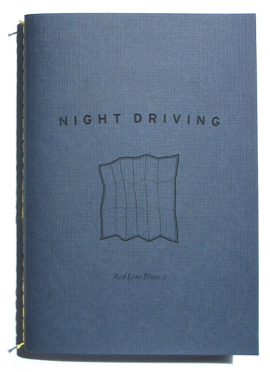

Available now in the online store.
Red Line Blues 2: Night Driving
Fall 2006
76 pages
4.5" x 6.5"
Edition of 500
Jessie Grace Eller-Isaacs — Without Stopping
Greg Brown — Night Driving
Steve Norris — Allie’s Night Out
Becca Loomer — Self Talk
Ben Yanes — A Kind of Solemn/Drifting Down
Sebastian Matthews — On a Night When the Roads are Covered With an Invisible Coat of Ice
Anna Belle Peevey — 32º 27' 52" N 100º 22' 59"
Sam Yanes — They Drive By Night
Erich Nagler — Pause
Kenneth Becker — A Rough List of My Trips Across the United States, 1996–2006
Moriah Norris-Hale — Cheap Thrills
Robin MacCurdy — Night Driving
Elijah Miller — Night Driving
Lisa Freedman — Timing Is Everything
Teryn Norris — An Evolutionary Construct
Anna Dunn — Night Moves
James S. Corrigan — Half, Whole, Part
Gasman — Gasman and Junaluska